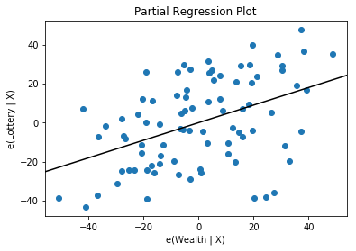

与scikit-learn比较，statsmodels包含经典统计学和经济计量学的算法。包括如下子模块：
- 回归模型：线性回归，广义线性模型，健壮线性模型，线性混合效应模型等等。
- 方差分析（ANOVA）。
- 时间序列分析：AR，ARMA，ARIMA，VAR和其它模型。
- 非参数方法： 核密度估计，核回归。
- 统计模型结果可视化。
statsmodels更关注统计推断，提供不确定估计和参数p-value。相反的，scikit-learn注重预测。
1. 模型拟合和描述
>>> import statsmodels.api as sm
>>> import statsmodels.formula.api as smf
>>> import pandas
>>> df = sm.datasets.get_rdataset("Guerry", "HistData").data
>>> df = df.dropna()
# step 1 Describe model,return model class
>>> mod = smf.ols(formula='Lottery ~ Literacy + Wealth + Region', data=df)
# step 2 Fit model,return result class
>>> res = mod.fit()
# step 3 Summarize model
>>> print(res.summary())
OLS Regression Results
==============================================================================
Dep. Variable: Lottery R-squared: 0.338
Model: OLS Adj. R-squared: 0.287
Method: Least Squares F-statistic: 6.636
Date: Sun, 23 Dec 2018 Prob (F-statistic): 1.07e-05
Time: 18:41:19 Log-Likelihood: -375.30
No. Observations: 85 AIC: 764.6
Df Residuals: 78 BIC: 781.7
Df Model: 6
Covariance Type: nonrobust
===============================================================================
coef std err t P>|t| [0.025 0.975]
-------------------------------------------------------------------------------
Intercept 38.6517 9.456 4.087 0.000 19.826 57.478
Region[T.E] -15.4278 9.727 -1.586 0.117 -34.793 3.938
Region[T.N] -10.0170 9.260 -1.082 0.283 -28.453 8.419
Region[T.S] -4.5483 7.279 -0.625 0.534 -19.039 9.943
Region[T.W] -10.0913 7.196 -1.402 0.165 -24.418 4.235
Literacy -0.1858 0.210 -0.886 0.378 -0.603 0.232
Wealth 0.4515 0.103 4.390 0.000 0.247 0.656
==============================================================================
Omnibus: 3.049 Durbin-Watson: 1.785
Prob(Omnibus): 0.218 Jarque-Bera (JB): 2.694
Skew: -0.340 Prob(JB): 0.260
Kurtosis: 2.454 Cond. No. 371.
==============================================================================
Warnings:
[1] Standard Errors assume that the covariance matrix of the errors is correctly specified.
>>> res.params # 获取模型参数
Intercept 38.651655
Region[T.E] -15.427785
Region[T.N] -10.016961
Region[T.S] -4.548257
Region[T.W] -10.091276
Literacy -0.185819
Wealth 0.451475
dtype: float64
>>> dir(res) # 查看完整的属性列表
2. 输入输出模型
from statsmodels.iolib import smpickle
smpickle.save_pickle(obj, fname) #Save the object to file via pickling.
smpickle.load_pickle(fname) #Load a previously saved object from file
3. 模型测试和绘图
>>> #Rainbow测试线性度（零假设是关系被正确建模为线性)
>>> sm.stats.linear_rainbow(res)
(0.847233997615691, 0.6997965543621644)
>>> sm.graphics.plot_partregress('Lottery', 'Wealth', ['Region', 'Literacy'],
data=df, obs_labels=False) #绘制回归图

4. 使用R型公式来拟合模型
import statsmodels.formula.api as smf
| formula | 说明 | 示例 |
|---|---|---|
| ~ | 分隔符，左边为响应变量，右边为解释变量 | |
| + | 添加变量 | y~x+y |
| - | 移除变量 | y~xzw–x:z:w可展开为 y ~ (x + z + w)**2 |
| - | 移除变量 | y~x-1(移除截距) |
| : | 预测变量交互项 | y~x+y+x:y |
| * | 包含所有交互项的简洁方式 | 代码y~ x * z可展开为y ~ x + z + x:z |
| ** | 交互项的最高次数 | 代码 y ~ (x + z + w)**2 可展开为 y ~ x + z + w + x:z + x:w + z:w |
| C() | 处理分类变量 | |
| function | 数学函数 | log(y) ~ x + z + w |
支持R型公式的模型
In [15] res = smf.ols(formula='Lottery ~ Literacy + Wealth + C(Region) -1 ', data=df).fit()
不支持R型公式的模型，使用patsy 模块
#Using formulas with models that do not (yet) support them
In [22]: import patsy
In [23]: f = 'Lottery ~ Literacy * Wealth'
In [24]: y, X = patsy.dmatrices(f, df, return_type='matrix')
#y被转化为patsy.DesignMatrix,x被转化为转化为numpy.ndarray
In [26]: print(X[:5])
[[ 1. 37. 73. 2701.]
[ 1. 51. 22. 1122.]
[ 1. 13. 61. 793.]
[ 1. 46. 76. 3496.]
[ 1. 69. 83. 5727.]]
In [27]: f = 'Lottery ~ Literacy * Wealth'
In [28]: y, X = patsy.dmatrices(f, df, return_type='dataframe') #转化为pandas.dataframe
In [30]: print(X[:5])
Intercept Literacy Wealth Literacy:Wealth
0 1.0 37.0 73.0 2701.0
1 1.0 51.0 22.0 1122.0
2 1.0 13.0 61.0 793.0
3 1.0 46.0 76.0 3496.0
4 1.0 69.0 83.0 5727.0
In [31]: res=smf.OLS(y, X).fit()
5. statsmodels参数
Statsmodels使用endog和exog为模型数据参数名称，作为估计器的观测变量。
| endog | exog |
|---|---|
| y | x |
| y variable | x variable |
| left hand side (LHS) | right hand side (RHS) |
| dependent variable（因变量） | independent variable（自变量） |
| regressand | regressors |
| outcome | design |
| response variable（响应变量） | explanatory variable（解释变量） |
6. 模型和拟合结果的超类
Model和Result是statsmodels所有模型和结果的父类
model class
Model(endog, exog=None, **kwargs) #建立模型
| Methods | desc |
|---|---|
| fit() | Fit a model to data. |
| from_formula(formula, data, subset=None, drop_cols=None, args, *kwargs) | Create a Model from a formula and dataframe. |
| predict(params, exog=None, args, *kwargs) | After a model has been fit predict returns the fitted values. |
| Attributes | desc |
|---|---|
| endog_names | Names of endogenous variables |
| exog_names | Names of exogenous variables |
result class
Results(model, params, **kwd) #一般通过模型fit方法拟合生成
| Methods | desc |
|---|---|
| initialize(model, params, **kwd) | |
| predict([exog, transform]) | Call self.model.predict with self.params as the first argument. |
| summary() |